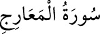

<a name=9969></a><br/>
<b>70- el-MEÂRİC SÛRESİ</b><br/>
<i><b>Mekke’de nâzil olan bu sûre 44 âyettir. </b></i><br/>
<i><b>Adını üçüncü âyetindeki «el-Meâric» kelimesinden almıştır. Meâric, «ma’rec»’in</b></i><br/>
<i><b>çoğulu olup «yükselme dereceleri» demektir.</b></i><br/>
